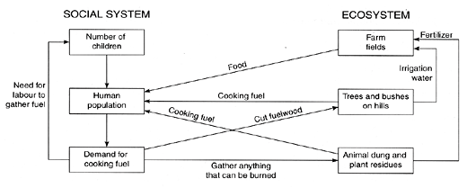

Environmental Tipping Points: A New Paradigm for Restoring Ecological Security
- Author: Gerald Marten
- This article was published in the Journal of Policy Studies (Japan), No.20 (July 2005), pages 75-87.
- It is based on a retirement lecture presented January 12, 2005 at Kwansei Gakuin University's Kobe-Sanda Campus.
- Download (PDF)
An environmental tipping point is a part of the human-environment system that can lever far-reaching change in the system. A change at the tipping point sets in motion mutually reinforcing feedback loops that propel the system on a completely new course. An environmental tipping point perspective can help to cope with the complexity of environmental problems by providing a lens for:
- comprehending why some environmental problems are so difficult to solve;
- understanding environmental success stories in a way that points to concrete measures for strengthening ecological security and sustainability;
- creating a more functional and productive public dialogue for ecological security and sustainability.
Apo Island in the Philippines provides an example of environmental tipping points in action. The introduction of destructive fishing methods was a “negative tip” that set the regional fishery on a forty-year downward spiral to virtual collapse. Apo Island escaped the downward spiral with a “positive tip” — the creation of a small marine sanctuary — which set in motion a cascade of ecological and social changes that restored declining fish stocks and returned the island’s marine ecosystem to health. Japan had a similar experience with severe deforestation during the Seventeenth Century. Extension of traditional village cooperation to forest management stimulated the development and dissemination of new silvicultural techniques and the creation of new social institutions that set Japan on a course of sustainable forest use. Environmental tipping point success stories from around the world can be found at the EcoTipping Points website.
Key Words: Environmental Tipping Points. Ecological Security. Sustainable Development. Resilience, Philippine Fisheries, Japanese Forests
Introduction
Security is on people’s minds these days. The word “security” evokes images that range from personal security, employment, and street crime to national security, warfare, and terrorist attacks. What is security? In basic terms, security is freedom from harm and danger, threat and intimidation, fear and anxiety, need and want (Foster 2005). In this sense, personal and national security are strongly dependent on “ecological security” -- the reliability and sustainability of our environmental support system.
There are numerous connections between security and the environment, some of them very direct and others not so direct (Homer Dixon 1999, Barnett 2001, Dalby 2002, Degeest and Pirages 2003, Stipp 2004, Worldwatch Global Security Project):
- Collapse of services from environmental support systems can make it impossible for people to meet their basic needs.
- Deterioration of the land’s food production capacity has forced millions of people in various parts of the world to migrate from countryside to city and from poor nations to affluent ones.
- Conflict between nations for land, water, petroleum, or other natural resources is common.
- Wars for regional autonomy or independence are fueled by the aspiration of regional minorities to control and benefit from their own natural resources when national elites are exploiting and degrading their resources.
- Where employment prospects are diminished by environmental deterioration, bitter young men provide ready recruits for international terrorism.
I believe it was the significance of ecological security for Japan’s future that motivated Kwansei Gakuin University to designate human ecology as a central theme for the School of Policy Studies. As the science of human-environment interaction, human ecology addresses the practical question of what makes human-environment systems sustainable or not sustainable. A central question for me while teaching human ecology in the School of Policy Studies has been the connection between the science of human ecology and its practical application. In other words, “How can human ecology contribute to sustainable development?”
A fully satisfying answer to this question has been elusive. Human-environment systems are so complex, it is virtually impossible to comprehend the implications of all the connections. Human ecology can contribute to sustainable development by raising environmental awareness and pointing to the often not-so-obvious ecological consequences of our actions, but ecological predications are typically not as precise as we might desire. Moreover, it is simply beyond human capacity to fix piecemeal everything that goes wrong when a human-environment system is not sustainable. Most things that we can do have little effect against powerful social forces such as the human population explosion, globalization, urbanization, and a consumer society that imposes ever increasing demands on the environment — social forces that are reducing sustainability and undermining our ecological security. Though we are winning some of the battles for sustainability, we seem to be losing the war.
Human ecology can best contribute to sustainable development if it offers better perspectives (i.e., paradigms) on the environment than the perspectives that have gotten us into trouble. The paradigms should make sense to people who are not environmental specialists, so everyone can understand them and make good use of them. I believe I have found such a paradigm, and I call it “environmental tipping points”.
What are Environmental Tipping Points?
The expression “tip point” was first used by Grodzins (1957)to refer to a very particular threshold. The “tip point” was the percentage of non-white residents in a previously white neighborhood that would precipitate a “white flight”, switching the neighborhood to total occupation by non-whites. Wolf (1963) used the phrase “tipping point” to describe the same phenomenon, and Schelling (1978) applied “tipping point” to other social phenomena as well. The phrase “tipping point” was popularized by Malcolm Gladwell’s best-selling book The Tipping Point: How Little Things Can Make a Big Difference (Gladwell 2000), which used “tipping point” to represent the point in time when a new idea “takes off”, spreading rapidly through a society. Though Grozdins, Wolf, Schelling, and Gladwell did not use systems jargon such as “positive feedback loops”, their use of “tipping point” reflected the amplifying effects of positive feedback loops and the power of positive feedback loops to engender change.
I use “environmental tipping point” to mean a lever that can “tip” a human-environment system from one set of mutually reinforcing processes (called a “stability domain” or “attractor basin” in systems jargon) to a stability domain that carries system change in a completely different direction. An environmental tipping point is a particular part of a human-environment system that can be changed to set in motion positive feedback loops propelling the system on a completely different course. The change that tips the system may involve an existing part of the system, or it may consist in the addition of something new.
A “negative tip” is a switch from a desirable stability domain to an undesirable one, a change from a sustainable environmental support system to deterioration of the system’s services. A “positive tip” is a switch from an undesirable stability domain to a desirable one. Deterioration is turned around and the human-environment system heads toward greater sustainability.
An Environmental Tipping Point Story: Cooking Fuel, Deforestation, and Biodigesters
In my Introduction to Human Ecology course, I have used a somewhat idealized story about “cooking fuel in India” to illustrate the essence of environmental tipping points (Marten 2001, p. 5-7; Marten et al. 2005, p. 5-8).Here is the story. For thousands of years people cut branches from trees and bushes to cook their food. This was not a problem as long as there were not too many people, but the situation changed with a dramatic increase in population during the Twentieth Century. The larger number of people cut so much fuelwood there were no longer enough trees and bushes to provide the fuel they needed. People responded by having their children search for anything that could be burned, such as twigs, crop residues, and cow dung. Fuel collection made children’s labor valuable, reinforcing the incentive for large families. The population continued to increase, leading to more demand for fuel.
Intensive collection of cooking fuel had a number of serious effects in the ecosystem (Figure 1). Using cow dung as fuel reduced the quantity of dung available for use as manure on farm fields. Soil fertility declined, and so did food production. In addition, the flow of water from deforested hills to irrigate farm fields during the dry season was less than before. Soil erosion was greater, and irrigation water contained more sediment, which settled in canals, clogging them and reducing food production even further.
Human population was the tipping point that levered the human-environment system into a vicious cycle of deforestation, fuel shortage, lower food production, and more population growth. It seemed hopeless to solve all the problems in the face of such powerful social and ecological forces. Fortunately, a single advance in energy technology offered a way to turn things around.
NGOs and governments began to introduce biodigesters to villages about twenty-five years ago. The biodigesters were large tanks in which people placed human waste, animal dung, and plant residues to ferment, creating methane gas for cooking. When the fermentation was finished, the plant and animal wastes in the tank were removed and put on farm fields as fertilizer. Because people had gas for cooking, there was less pressure on the forests for fuelwood. If other activities such as commercial logging or agricultural encroachment were not excessive, the forests began to recover, providing more and cleaner water for irrigation. Plant and animal wastes were used to fertilize the fields (after being used in biodigesters), food production increased, and people did not need a large number of children to gather scarce cooking fuel.

Figure 1. Cooking fuel and deforestation: chain of effects and positive feedback loops through ecosystem and social system that create a vicious cycle of progressively greater environmental deterioration (Source: Marten 2001).
This story is a highly simplified representation of a very complex situation. Many factors besides fuelwood collection are responsible for deforestation and family sizes. Moreover, other technologies in addition to biogas, such as fuel-efficient cook stoves and liquid propane gas, have also reduced the demand for fuelwood. Nonetheless, biodigesters have spread through India, millions are now in use, and many of the beneficial effects have been realized. The website for the Indian government’s Ministry of Non-Conventional Energy Sources summarizes what is happening at the present time.
In the story about cooking fuel and deforestation, biodigesters were a tipping point that levered the system into a stability domain reversing the feedback loops responsible for decline. The vicious cycle was transformed into a “virtuous cycle”. With biodigesters in place, the feedbacks in Figure 1 reinforced efforts to solve the problems instead of nullifying those efforts.
Environmental tipping points provide a paradigm of hope in a world of accelerating environmental deterioration by offering an alternative to micro-management. The information, material, and energy inputs to micromanage solutions for the myriad environmental problems that we face are simply beyond human capacity. Environmental tipping points are not magic bullets to solve environmental problems overnight. But in a world of limited resources and powerful social and ecological currents, they are efficient ways to help the self-organizing powers of nature and human nature to move environmental support systems toward greater health.
Apo Island: A Story of Fisheries Collapse and Salvation
In September 2004 I went to Apo Island with my Workshop (Jishuu) class to do human ecology field research. The island provided a relatively simple but very instructive case study for exploring how environmental tipping points work in practice.
Apo is a small island (78 hectares), 9 kilometers from the coast of Negros in the Philippine archipelago. The island has 145 households and a resident population of 710 people. Almost all the men on the island are fishermen. The main fishing grounds are in the area surrounding the island to a distance of roughly 500 meters, an area with extensive coral reefs and reaching a water depth of about 60 meters. Fishermen use small, paddle-driven outrigger canoes, though a few fishermen (particularly younger ones) have outboard motors on their canoes. The main fishing methods are hook and line, gill nets, and bamboo fish traps.
Apo Island’s “negative tip” started about forty years ago. Before then, the fishery was healthy and sustainable, providing ample harvest to support fishermen and their families. During the years following World War II the growing human population and increasing fishing pressure made the fishery increasingly vulnerable to unsustainable fishing. The “negative tip” came with the introduction of four destructive fishing methods to the Philippines:
- Dynamite fishing, which started with explosives left over from World War II and gained momentum by the 1960s;
- Muro-ami (from Japan). Fish are chased into nets by pounding on coral with rocks.
- Cyanide, introduced during the 1970s for the aquarium fish trade. Aquarium fish are no longer collected in this region, but cyanide remained.
- Small-mesh nets. Worldwide marketing of newly developed nylon nets brought small-mesh beach seines and other small-mesh nets to the region in the l970s.
Dynamite, cyanide, muro-ami, and small-mesh nets are more effective than traditional Filipino fishing methods, but they are seriously detrimental to the sustainability of the fishery. Not only do they make overfishing and immature fish harvesting easier, they also damage fishing habitat. These fishing methods have been illegal since regulations were imposed in the early 1980s. The Philippine Coast Guard and National Police are responsible for enforcing fishing regulations, but the massive expanse of fishing areas under their jurisdiction has made it virtually impossible for these agencies to stop destructive fishing.
The introduction of destructive fishing methods set in motion a vicious cycle of declining fish stocks and greater use of destructive methods to compensate for deteriorating fishing conditions. Damage to the coral reef habitat is now extensive throughout much of the Philippines, and fish stocks in the most degraded areas are down to 5-10% of what they were fifty years ago. Though catches in degraded areas are not sufficient to support a fisherman full-time, the fishery continues to be depressed by a large number of fishermen, many of them part-time and many using illegal fishing methods that they consider the only practical way to catch fish under these conditions. The problem is exacerbated by illegal encroachment of larger commercial fishing boats with gear such as purse seines and ring nets wherever enforcement is lax and nearshore fishing conditions are good enough to make encroachment worthwhile.
The prelude to the positive tip for Apo Island began in 1974 when Dr. Angel Alcala (director of the marine laboratory at Silliman University in Dumaguete City) and Oslob municipality (Cebu) initiated a small marine sanctuary, the region’s first, at uninhabited Sumilon Island (about 50 km from Apo). Dr. Alcala and some of his colleagues at Silliman University visited Apo Island In 1979 to explain how a marine sanctuary could help to reverse the decline in their fishery, a decline that had become obvious to everyone. By that time, fish stocks on the Apo Island fishing grounds had declined so much that fishermen were compelled to spend much of their time traveling as far as 10 km from the island to seek more favorable fishing conditions.
Dr. Alcala took some of the fishermen to see the marine sanctuary at Sumilon Island, which by then was teeming with fish. They were able to see how a sanctuary could serve as a nursery to stock adjacent fishing grounds, but they were not completely convinced. Marine sanctuaries were not part of Philippine fisheries tradition. After three years of dialogue between Silliman University staff and Apo Island fishermen, 14 families decided to establish a no-fishing marine sanctuary on the island. A minority of families was able to do it because the barangay captain (local government leader) supported the idea.
The positive tip for Apo Island came with actual establishment of a marine sanctuary in 1982. The fishermen selected an area along 450 meters of the island’s shoreline and extending 500 meters from shore as the sanctuary site — slightly less than 10% of the fishing grounds around the island. The sanctuary area had high quality coral but few fish. It required only one person watching from the beach to ensure that no one fished inside the sanctuary. Guard duty rotated among the participating families.
Fish numbers and sizes started to increase in the sanctuary, and “spillover” of fish from the sanctuary to the surrounding marine ecosystem led to higher fish catches around the periphery, eventually to a distance of several hundred meters. In 1985 all island families decided to support the sanctuary and make it legally binding through the local municipal government.
When the fishermen saw what happened in and around the sanctuary, they concluded that fishing restrictions over the island’s entire fishing grounds should be able to increase fish stocks there as well. With technical support from a coastal resource management NGO, the fishermen set up a Marine Management Committee and formulated regulations against destructive fishing and encroachment of fishermen from other areas on their fishing grounds. They established a local “marine guard” (bantay dagat) consisting of village volunteers to police the fishing grounds. It was no longer necessary to guard the sanctuary per se because everyone accepted its status as a no-fishing zone. The main task of the marine guards today is to check boats that enter their fishing grounds from other areas. They do not seem to worry about Apo Island fishermen because sustainable fishing has become an integral part of the island culture.
Although available data do not allow a precise comparison of current fish stocks on the Apo Island fishing grounds with fish stocks when the sanctuary was established, the data indicate that overall catch-per-unit-effort more than tripled by the mid-1990s and has not increase much since then. However, the larger and commercially more valuable fish (e.g., surgeon fish and jacks) increased more slowly and are in fact still increasing. This scenario is confirmed by the fishermen’s subjective impression of what has happened (Russ et al. 2004).
Interestingly, the total catch by island fishermen is about the same as 23 years ago when the sanctuary began. This is because the fishermen have responded to the increase in fish stocks by reducing their effort instead of catching more fish. Fishermen no longer must travel long distances to fish elsewhere. Fishing is good enough right around the island. A few hours of work each day provide food for the family and enough cash income for necessities. The fishermen worked long hours before. Now they enjoy more leisure time. If they wish, they can use some of the extra time for other income generating activities such as transporting materials or people between the island and the mainland. The most prominent reason for earning extra money is to fund higher education for their children.
The striking abundance and diversity of fish and other marine animals (e.g., turtles and sea snakes) around the island have attracted coral reef tourism (Cadiz and Calumpong 2000). The island has two small hotels and a dive shop, which employ several dozen island residents. In addition, diving tour boats come daily from the nearby mainland. A few island households take tourists as boarders, and some of the women have tourist related jobs such as catering for the hotels or hawking Apo Island T-shirts. The island government collects a snorkeling/diving fee, which has been used to finance a diesel generator that supplies electricity to every house in the island’s main village during the evening. The tourist fees have also financed substantial improvements for the island’s elementary school, garbage collection for disposal at a landfill on the mainland, and improvements in water supply. With help from Silliman University, the island’s elementary school has developed an environmental science curriculum that provides comprehensive information about the island’s marine ecosystem.
Tourist revenue has also provided family income and “scholarships” (from one of the island hotel owners) to finance more than half the island’s children to attend high school on the adjacent mainland, and many continue to university. Most high school graduates return to live on the island, where the men work as fishermen. However, almost all university graduates and some of the high school graduates stay on the mainland with a job that allows them to send money to their family back on the island. A few university graduates return for professional work on the island such as elementary school teacher, and some aspire to return to contribute to the island’s health services, governance, or marine ecosystem management. Remittances from family members living off-island are used mainly for private infrastructure such as house improvements. Many people who live away from the island live close enough for frequent visits to their family on the island.
Apo Island has served as a model for fishing communities on the adjacent mainlands of Negros and Cebu. The head of Apo Island’s local government visits other fishing villages to explain the sanctuary, and people from other villages visit Apo to see what it’s all about. In 1994 the Apo Island example, and the fact that Dr. Alcala was Minister of Natural Resources, stimulated the Philippine government to establish a national marine sanctuary program that now has about 400 sanctuaries nationwide. Not all are functioning as well as they should, but many seem to be on the same path as Apo.
The Apo Island story is not a fairy tale. I visited Apo Island, I talked to island residents, and everyone told me the same story. They firmly believe that the sanctuary saved their island. The story is documented by scientific publications that include twenty-five years of monitoring the island fishery and ecological conditions in the sanctuary. The following publications provide an overview: Russ and Alcala (1996), Russ and Alcala (1998), Russ and Alcala (1999), Alcala (2001, p. 73-84), Maypa et al. (2002), Russ and Alcala (2004), Russ et al. (2004), Alcala et al. (2005), Raymundo and White (2005).
Apo Island is not perfect. There are personal conflicts, political factions, complaints about government, and many other things typical of human society around the world. People on the island are not particularly affluent. Houses do not have piped water. Residents must collect water from faucets strategically placed around the village. Medical services on the island are limited, though doctors can be reached with a half-hour boat ride to the mainland. Many feel that the economic benefits of tourism, which go mainly to the hotel owners, should be distributed more evenly. While participation in the national sanctuary program has reinforced the status of the Apo Island sanctuary and provided networking benefits, it also means island fishermen no longer have complete control of sanctuary management or funds that come from diving and snorkeling fees.
As tourism has increased, concern has grown about the impact of snorkeling and diving on the sanctuary and the fishery (Reboton and Calumpong 2003). The island government has instituted restrictions on the number of tourists in the sanctuary to limit damage to coral there. Fishermen have complained that divers scare fish away from where they are fishing and sometimes damage their fish traps or release fish from the traps. As a consequence, divers are not allowed to swim within fifty meters of fishing activities and the island’s prime fishing area is completely off limits to divers. Some island inhabitants are not satisfied with enforcement of these restrictions, and dialogue continues about what should be done to protect the marine ecosystem from damage by tourism.
But above all, there is a conspicuous atmosphere of well being and satisfaction with quality of life on the island. This is not because the island inhabitants are ignorant or inertial. They value their quality of life and the quality of the island’s marine ecosystem, and they want to keep it that way. Their experience with the sanctuary has taught them an important lesson. It is necessary to change some things by community action in order to keep other very important things the same.
Twenty years ago the island inhabitants changed the way they managed their fishing activities. Now they need to make some changes in the size of their families. Everyone agrees that the island’s increasing human population is a serious threat to its future. A family planning program was initiated two years ago, and contraceptives are readily available at a small community-operated family planning center. Most families are using them. Young people, even elementary school children, readily express their intention to have a small family. Immigration of people who are not descended from Apo Island families is not allowed.
The sanctuary has changed the way that people on the island view their world. The fishermen say that before the sanctuary their strategy was to fish a place with destructive methods until it was no longer worth fishing and then move to a new place that was not yet degraded. Now they are committed to keeping one place, their island’s fishing grounds, sustainable. Before, they expected government agencies responsible for enforcing fishing regulations to do so and complained when it didn’t happen. Now they enforce their own regulations themselves. This spirit of local initiative has extended to developing the island’s infrastructure and assuring that island children get the education they need for a decent future. Organization for fisheries management has stimulated the community to organize in other ways as well — particularly women’s groups. The island has a locally operated women’s credit union and a women’s association for selling souvenirs to tourists.
- This in-depth ETP story features a Photogallery.
What Does the Apo Island Story Tell us about Environmental Tipping Points?
We can draw the following interconnected conclusions about environmental tipping points from the Apo Island story:
The central role of catalytic actions and mutually reinforcing positive feedback loops. Environmental tipping points cascade through and between social system and ecosystem. A small change to either system leads to larger changes in both. A positive tip generates improvements in social and ecological systems that reinforce one another to turn both systems from deterioration to health. The catalytic action for Apo Island was establishment of the marine sanctuary, which set in motion numerous ecological and social changes. Most important was the fact that success with the sanctuary inspired local fishermen to devise and enforce regulations for their entire fishing grounds. Every round of success after that inspired the fishermen to improve the management regime even further. More fish stimulated tourism, which in turn reinforced the need for a vibrant marine ecosystem to continue attracting tourists. Tourism, the positive experience of exerting control over their destiny, and recognition as a model community for fisheries management stimulated numerous changes in the island society, setting in motion additional positive feedback loops involving island infrastructure, education, and family planning.
Environmental tipping points are efficient because they mobilize nature and natural social processes to do the work. The small labor input required to guard a 450-meter sanctuary allowed nature to restore the sanctuary and subsequently led to nature restoring the entire marine ecosystem over the island’s fishing grounds. The Apo Island story is not about an elaborate development plan that depended on large amounts of money and unattainable management targets to achieve success. The tipping point — establishment of the sanctuary — set in motion short-term feedback loops so people could quickly see the consequences of their actions. Normal economic, social, and governmental processes took it from there.
The central role of local community. The marine sanctuary was an effective tipping point because it belonged to the community. Most of the important things that happened after establishing the sanctuary came from local community action. Success empowered the community by motivating people to seek out more tipping points to provide even better services from their social and ecological systems. Once in motion on a local scale, the process extended beyond the island to include dive tours from the mainland and sending their children to mainland high schools and universities. It eventually extended to national government, which served as a catalyst to disseminate the same formula for local empowerment to other fishing villages. Strong local leadership in support of the sanctuary was critical for success. Apo Island has been blessed with supportive and strong barangay captains over the years. In other situations the leadership might come from civil society.
Role of outside stimulation and facilitation. While action at the local level is an essential feature of environmental tipping points, proactive stimulation and facilitation from outside the local community is often essential to set community action in motion and realize the cascade of effects that turns change in a better direction. Three years of dialogue and stimulation from Silliman University were necessary before local fishermen decided to try a sanctuary in 1982. Facilitation by a Philippine NGO with financial support from the United States played a crucial role in developing a sound management program for the island’s entire fishing grounds in 1985.Island residents were highly motivated to have a family planning program, and a Philippine NGO with international funding helped to make it happen.
Environmental tipping points generate symbols that reinforce the tip. They create community spaces, shared community “stories”, or other means that symbolize the “tip” and mobilize community action to carry it forward. The sanctuary is a sacred site for Apo Island inhabitants. It forms the centerpiece of a shared story of pride and achievement. It is unthinkable to violate the sanctuary or what it represents.
Significance of the demonstration effect. Demonstration stimulates, sustains, and expands the process. The fourteen families that started the Apo Island sanctuary would not have done it if they had not seen the sanctuary at Sumilon Island. They would not have persisted in guarding their sanctuary, and the other families on the island would not have joined them to manage the entire fishing grounds, if the sanctuary did not show rapid results. The success at Apo motivated other fishing communities to give it a try.
Environmental tipping points are co-adaptive. They help social system and ecosystem to fit together, functioning as a sustainable whole. As the Apo Island experience progressed, perceptions, values, knowledge, technology, social organization, and social institutions all changed in a way that enhanced the sustainability of the marine ecosystem for fishing and tourism. Simultaneously, the marine ecosystem changed through human action and natural ecological processes to fit the new character of the island’s social system. The changes also enhanced the coadaption and integration of different parts of the marine ecosystem. The sanctuary contributed to the ecological health of the adjacent fishing grounds, and the implementation of sustainable fishing practices on the fishing grounds enhanced the quality of the sanctuary. The two together — sanctuary and fishing grounds — function as a co-adapted and sustainable whole.
Effective environmental tipping points enhance resilience. We can consider “resilience” to be the ability to continue functioning in the same stability domain, with the same mutually reinforcing processes and structures, despite intermittent and sometimes severe external disturbance. Environmental tipping points contribute most effectively to sustainability when they move a social-ecological system into a stability domain that is not only sustainable but also resilient. Spinoffs from the sanctuary such as alternative incomes, marine ecology in the elementary school, access to higher education, the formation of women’s associations, and general strengthening of community solidarity and organization reinforce the ability of the island community to maintain a healthy and sustainable fishery and marine ecosystem in the face of unknown future challenges.
Environmental tipping points use social and ecological diversity as a resource. Apo Island fishermen would not have thought to start a sanctuary unless Silliman University staff brought the idea to them. The university was a source of social diversity that helped the fishermen to consider a greater array of strategies for dealing with the decline in their fishery. The marine sanctuary’s ecological diversity served as a stocking source for the surrounding fishing grounds, helping to maintain their ecological health and commercial value. Heavily exploited species of fish or other marine animals such as giant clams can disappear completely from fishing grounds without a sanctuary.
Environmental tipping points use social and ecological memory as a resource. Apo Island was able to return to traditional fishing methods such as hook and line, fish traps, and large-mesh nets because social memory told the fishermen that these methods were sustainable and the fishermen knew how to use them effectively. Ecological memory was responsible for how rapidly the marine ecosystem and fish populations in the sanctuary responded to protection. The strong adaptation of the region’s marine plants and animals to the local environment and to each other gave them the ability to quickly assemble a functional and sustainable ecosystem.
Deforestation and Reforestation in Japan
Japan had a serious deforestation problem 300 years ago, a consequence of unsustainable forest use that had been building up for a long time (Totman 1989). As long ago as 600-850 AD, construction booms in Nara and Heian, along with demands of the ruling elite for timber to supply armies and build castles and religious monuments, had caused serious deforestation in the Kinai region. Forest use was “exploitative”. Timber and other forest products where taken without regard to replenishing the supply.
Villagers throughout Japan had depended for many centuries on a variety of non-timber forest products essential to their survival. Most important were:
- A clean and reliable water supply for rice field irrigation and household use.
- Fuelwood and charcoal for domestic cooking and heating.
- Leaf litter and grass that villagers applied to their fields as organic fertilizer. One hectare of agricultural field required five to ten hectares of forest to keep it going. Grass from the forest also provided fodder for livestock.
Exploitative use of forests worked as long as Japan’s population was small. The rulers’ demands for timber sometimes led to severe local deforestation, but they were always able to shift the logging to new areas with “old growth” forests that contained an abundance of large trees for high quality lumber. Logging for timber demands of the elite often suited villagers because it opened up land for agriculture while also creating secondary forest, which was the best vegetation for providing organic fertilizer, fuel, fodder, and other forest products for subsistence.
The situation started to change around 1570. By then, Japan’s population had increased to ten million people, and villagers’ needs for subsistence forest products had increased correspondingly. Large-scale military conflict during the 1500s required large quantities of timber for the armies. With the advent of the Tokugawa shogunate and peace, followed by rapid growth of cities and monumental construction projects for castles, temples, and shrines, logging increased during the 1600s to a scale never before experienced in Japan. Conflict between villagers and rulers over the use of forest lands — subsistence products for the villagers vs. timber for the rulers — became more intense. By 1670 the population had increased to nearly thirty million, and with the exception of Hokkaido, the old growth forests had been completely logged. The supply of timber and other forest products was running out. Soil erosion, floods, landslides, and barren lands (genva) were becoming ever more common. Japan was headed for ecological disaster.
Japan responded to this environmental challenge with a “positive tip” from unsustainable to sustainable forest use that began around 1670 (Totman 1989). Although the details were completely different from the Apo Island story, the general form of the “positive tip” was the same: the central role of catalytic actions and mutually reinforcing positive feedback loops, local community, outside stimulation and facilitation, letting nature and natural social processes do the work, demonstration effects, social/ecological coadaptation, and using social/ecological diversity and memory as resources. It is difficult to single out the initial tipping point with certainty, but it seems to have derived from the centuries-old tradition of cooperation among villagers for protection against bandits, allotting rice fields and irrigation water, and storing rice. Until then, village cooperation had not extended to forest management, but villages started responding to the forest crisis by refining the management of satoyama secondary forests for subsistence needs (McKean 1982, 1986), and for the first time, planting sugi and hinoki plantations to help satisfy timber demands of the rulers.
The advent of tree plantations stimulated a need for silvicultural technology to plant and care for the trees, a technology that until that time existed only in rudimentary form. Local woodsmen, agronomists, and government forest officials developed new techniques for producing sugi and hinoki seed, planting sugi cuttings, thinning and pruning the plantations, and providing other care to ensure the healthy growth of sugi and hinoki necessary for high-quality timber. Itinerant scholars wrote silviculture manuals, and silviculture “missionaries” traveled around the country, spreading the new technology from village to village. The creation of managed tree plantations stimulated new social institutions for the ruling elite and villagers to cooperate on timber production in a way that provided villagers incentives to produce timber: yamawari (dividing use rights of village forest land among families), nenkiyarna (long term leases of forest land to villagers by the government), and buwakibayashi (villagers producing timber on government land and sharing the harvest with the government).
Managed forestry continued to develop and expand in conjunction with a “virtuous cycle” of mutually reinforcing silvicultural improvements, social institutions for forest land use, and timber marketing institutions. The “positive tip” that began with extending village cooperation to managing forests lands had stimulated a series of mutually reinforcing changes that slowed down deforestation and eventually led to the reforestation of Japan. The deforestation was severe and reforestation took a long time, reaching completion in the 1920s (Totman 1993, 1995).
Japan’s forest story has continued with new twists and turns since then. There was substantial deforestation during World War II, followed by intensive reforestation during the 1950s to 1970s. The reforestation emphasized sugi and hinoki plantations, even cutting natural forest to make plantations. Japan’s switch to imported wood, fossil-fuel energy, and chemical fertilizers for agriculture, in full swing by the 1980s. eliminated the demand for forest products from satoyama secondary forest and greatly reduced the demand for sugi and hinoki. There was no longer an incentive to continue managing the secondary forest, which is now undergoing natural ecological succession and the loss of many plant species adapted to the open and well-lighted environment of managed forests. Many sugi and hinoki plantations have fallen into neglect because the thinning, pruning, and other care necessary to produce high quality timber do not seem worth the effort.
This story of forestry in Japan is not intended to be authoritative or complete. The evolution of Japanese forests during the past three centuries has been complex, and I am no expert. The main point of my story is that Japan adapted to a deforestation crisis in the late 1600s by changing from unsustainable forest exploitation to managed and sustainable forestry. Adaptation featured a tipping point that turned the nation from ecological disaster toward ecological health, restoring a natural resource base that put Japan in a strong position for its economic development during the Twentieth Century.
Numerous other societies, past and present, have not been so fortunate. Past civilizations with a deforestation crisis collapsed if they did not make the change from unsustainable forest exploitation to sustainable forestry (Diamond 2004). There are also numerous places in the world today that are suffering because they did not make that change. Particularly tragic examples are Haiti, which is trapped in inescapable poverty due to deforested, eroded, and unproductive landscapes; and North Korea, where deforestation, floods, and resulting crop damage have been responsible for famine in recent years.
How about Japan Today?
The character of Japan’s landscape has headed in a new direction since World War II. Before the war, forests were abundant, and urban areas were a patchwork of houses and commercial buildings with agriculture and other green space. Although Japan was dependent on natural resource imports for industry, it was relatively self-sufficient for food and household energy. The conclusion of World War II tipped Japan into a new stability domain that has profoundly changed nearly every aspect of the society and its environment.
Japan’s main environmental concern during the 1960s and 1970s was air and water pollution, which included high-profile health impacts such as minamata (mercury poisoning) and itai-itai (cadmium poisoning). Japan has reduced pollution substantially in recent years, but land use changes associated with urban expansion have accelerated in ways that could be far more significant for Japan’s long-term ecological security. Japan still has a highly forested landscape, but nearly 1% of the forest is lost to urban expansion each year. Moreover, Japan has the smallest amount of agriculturally suitable land per-capita of any nation in the world, and the amount of land that can be used for agriculture continues to diminish as agricultural land is covered by urban construction. The pattern of the urban landscape is also changing. A diverse landscape mosaic is being replaced by cities with little green space.
These changes are fuelling positive feedback loops that accelerate a decline in Japan’s ecological security. Less green space means less opportunity for outdoor recreation and less community space for many neighborhoods. This reduces the community solidarity necessary to address local social and environmental issues effectively. In addition, many children do not live close enough to parks or other green areas for the kind of spontaneous play and exploration of nature enjoyed by their parents, grandparents, and all who came before them. Even many children who live close to natural areas are imbedded in an indoor life of juku, television, and video games. Lacking outdoor play and exploration, children are growing up to be adults without the emotional connection to nature and without the direct knowledge of their environmental support system so central to maintaining ecological security and sustainability in the past.
At the same time, the environmental support system for urban society is becoming increasingly dispersed around a “globalizing” world. No one knows where all the material goods they consume come from, to say nothing of environmental sustainability in the places of origin. The environmental support system for urban societies is remote and unknown. Sustaining that support system is not an integral concern for modern consumers.
Japan’s population quadrupled during the past century, making an already overpopulated nation even more overpopulated. The strength of the Japanese economy in recent decades has allowed it to compensate for overpopulation by importing food, energy, and other natural resources, but Japan has become alarmingly dependent on imports to provide even the basic necessities of life. This strategy is not resilient to possible decline in the future supply of those imports.
For Japan’s ecological security, citizens and officials at all levels of government should be engaged in public dialogue about the current status of Japan’s environmental support system and where it is headed. The dialogue should address:
- What elements of quality of life and the environment are most valued?
- What is the vision for the future? What quality of life and environmental quality do people desire for the future?
- How does the present situation compare with the vision?
- How are quality of life and environmental quality changing? How does the change fit with the vision?
- What are driving forces for the changes?
- How can we make the human-environment system more resilient, so quality of life and environmental quality do not deteriorate?
- What are the tipping points (i.e., catalytic actions generating mutually reinforcing feedback loops) for “positive tips” to move the human-environment system into a stability domain that will propel change in a better direction?
Conclusions
Environmental tipping points are a conceptual tool — a lens for perceiving how human-environment systems change — that can strengthen our adaptive capacity to deal with environmental challenges. Environmental tipping points can help to comprehend why some environmental problems are so difficult to solve. Most important, environmental tipping points can help to identify actions for stopping environ mental deterioration, turning things around toward greater environmental health.
Environmental tipping points can help to understand and generalize ecological success stories in a way that clarifies the core reasons for their success. Nearly one hundred case studies of environmental tipping point success stories from around the world can be found at the environmental tipping points website. They embrace a broad spectrum of human-environment systems and an equally broad spectrum of environmental problems, services, and settings ranging from deforestation, desertification, pollution, urban sprawl and urban decay to watersheds, coastal zones, agriculture, fisheries, biodiversity conservation, urban parks and community gardens, water supply, energy, and disease control.
From stories around the world, we have begun to learn essential characteristics of environmental tipping points and how they work. As we examine more cases through this lens, we will refine our understanding, clarifying how to recognize environmental tipping points and act upon them to create more success stories. At the same time, dissemination of an environmental tipping points perspective to the public can contribute to a more functional public paradigm and more productive public discourse for achieving ecological security and sustainability.
Acknowledgments
I wish to thank Soichi Endo and Akihiro Amano for their seminal roles in establishing human ecology as a major theme at the School of Policy Studies and creating an inspiring academic atmosphere for my work. I first became aware of the “tipping point” phrase when Mary Smith brought Malcolm Gladwell’s book The Tipping Point to my attention. The inspiration for “environmental tipping points” arose from conversations with journalist Steve Brooks about how to make the non-linear systems concepts in my textbook Human Ecology: Basic Concepts for Sustainable Development (Marten 2001) accessible and usable for the general public. Subsequent definition of “environmental tipping points” as a way to understand and learn from environmental success stories grew out of discussions with Steve Brooks and Amanda Suutari. S.N. Srinivas (The Energy and Resources Institute, Bangalore) provided an update on what has happened with biodigesters for cooking fuel in India. Angel Alcala, Alan White, Laurie Raymundo, Aileen Maypa, and Mario Pascobello provided information for the Apo Island story. Portia Nillos helped in numerous ways during my visit to Apo Island. Conrad Totman graciously answered many questions about his book The Green Archipelago: Forestry in Pre-Industrial Japan (Totman 1989) and Japan’s transition from exploitative to regenerative forestry. Discussions with Shuichi Sekimoto have helped to explore the application of human ecology to sustainable development in the Japanese setting. Financial support for the research was provided by a Special Research Grant from Kwansei Gakuin University.
References
- Alcala, Angel C. 2001. Marine Reserves in the Philippines: Historical Development, Effects and Influence on Marine Conservation Policy. Bookmark, Makati City, Philippines.
- Alcala, Angel C., Garry R. Russ, Aileen P. Maypa, and Hilconida P. Calumpong. 2005. A long-term, spatially replicated experimental test of the effect of marine reserves on local fish yields. Canadian Journal of Fisheries and Aquatic Sciences 62:98-108.
- Barnett, Jon. 2001. The Meaning of Environmental Security Ecological Politics and Policy in the New Security Era. Zed Books, London.
- Cadiz, Pablina L. and Hilconida P. Calumpong. 2000. Analysis of revenues from ecotourism in Apo Island, Negros Oriental, Philippines. Proceedings of 9thInternational Coral Reef Symposium, Bali, Indonesia 23-27 October 2000, Volume 2, p. 771-774.
- Dalby, Simon. 2002. Environmental Security. University of Minnesota Press, Minneapolis.
- Degeest, Theresa M. and Dennis C. Pirages. 2003. Ecological Security: An Evolutionary Perspective on Globalization. Rowman & Littlefield, Lanham, Maryland.
- Diamond, Jarod. 2004. Collapse: How Societies Choose to Fail or Succeed. Viking, New York.
- Foster, Gregory D. 2005. A new paradigm for human security. Worldwatch 18:36-46.
- Gladwell, Malcolm. 2000. The Tipping Point: How Little Things Can Make a Big Difference. Little, Brown, and Company, Boston.
- Grodzins. Morton. 1957. Metropolitan segregation. Scientific American 197(4):33-4l.
- Homer-Dixon, Thomas. 1999. Environment, Scarcity, and Violence. Princeton University Press, Princeton.
- Maypa, Aileen P., Garry R. Russ, Angel C. Alcala, and Hilconida P. Calumpong. 2002. Long-term trends in yield and catch rates of the coral reef fishery at Apo Island, central Philippines. Marine Freshwater Research 53:207-213.
- Marten, Gerald G. 2001. Human Ecology: Basic Concepts for Sustainable Development. Earthscan Publications, London.
- Marten, Gerald G., Shuichi Sekimoto, and Akihiro Amano. 2005. Introduction to Human Ecology: A New Paradigm for Sustainable Development. [in Japanese] Yuhikaku Publishing Company, Tokyo.
- McKean, Margaret A. 1982. The Japanese experience with scarcity: management of traditional common lands. Environmental Review 6:63-88.
- McKean, Margaret A. 1986. Management of traditional common lands (Iriaichi) in Japan. In Proceedings of the Conference on Common Property Resource Management, National Research Council, p. 533-589. National Academy Press, Washington, DC.
- Raymundo. Laurie J. and Alan T. White. 2005. 50 years of scientific contributions of the Apo Island experience: a review. Silliman Journal (50th Anniversary Issue), Silliman University, Dumaguete, Philippines.
- Reboton, Clarissa and Hilconida P. Calumpong. 2003. Coral damage caused by divers/snorkelers in Apo Island marine sanctuary, Dauin, Negros Oriental, Philippines. Philippine Scientist 40:177-190.
- Russ, Garry R. and Angel C. Alcala. 1996. Do marine reserves export adult fish biomass? Evidence from Apo Island, central Philippines. Marine Ecology Progress Series 132:1-9.
- Russ, Garry R. and Angel C. Alcala. 1998. Natural fishing experiments in marine reserves 1983-1993: community and trophic responses. Coral Reefs 17:383-397.
- Russ. Garry R. and Angel C. Alcala. 1999. Management histories of Sumilon and Apo marine reserves, Philippines, and their influence on national marine resource policy. Coral Reefs 18:307-3 19.
- Russ, Garry R. and Angel C. Alcala. 2004. Marine reserves: long-term protection is required for full recovery of predatory fish populations. Oecologia138:622-627.
- Russ, Garry R., Angel C. Alcala, Aileen P. Maypu, Hilconida P. Calumpong, and Alan T.
- White. 2004. Marine reserve benefits local fisheries. Ecological Applications 14:597-606.
- Schelling, Thomas A. 1978. Micromotives and Macrobehavior. W. W. Norton & Company, New York.
- Stipp, David. 2004. Climate collapse: the pentagon’s weather nightmare. Fortune 149(3):l00-108.
- Totman, Conrad. 1989. The Green Archipelago: Forestry in Pre-industrial Japan. University of California Press, Berkeley.
- Totman, Conrad. 1993. Early Modern Japan. University of California Press, Berkeley.
- Totman. Conrad. 1995. The Lumber industry in Early Modern Japan. University of Hawaii Press, Honolulu.
- Wolf, Eleanor P. 1963. The tipping-point in racially changing neighborhoods. Journal of the American Institute of Planners 29(3):2l7-222.